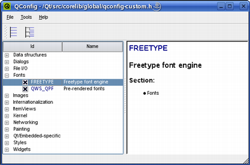

| Home · All Classes · Main Classes · Grouped Classes · Modules · Functions |
Qtopia Core uses the FreeType 2 font engine to produce font output. For this reason it supports the same font formats as this font engine. In addition, Qtopia Core supports the Qt Prerendered Font (QPF), a light-weight non-scalable font format specific to Qtopia Core. Several of the formats may be rendered using anti-aliasing for improved readability on low-resolution devices.
When Qtopia Core applications run, they look for a file called fontdir in Qtopia Core's /lib/fonts/ directory. This file defines the fonts that are available to the application (i.e. the fonts located in the /lib/fonts/ directory), and can be modified to specify the preferred fonts.
Support for other font formats can be added, contact info@trolltech.com for more information.
| Optimization Both the FreeType and QPF formats are features that can be disabled using Qtopia Core's feature definition system, reducing the size of Qt and saving resources. Note that at least one font format must be defined. See the Fine-Tuning Features in Qtopia Core documentation for details. |  |
All supported fonts use the Unicode character encoding. Most fonts available today do, but they usually don't contain all the Unicode characters. A complete 16-point Unicode font uses over 1 MB of memory.
Warning: The font definition file, naming conventions for the font files, and the format of QPF files may change in future versions of Qtopia Core.
By default, the FreeType 2 font engine (and Qtopia Core) supports the following font formats:
It is possible to add modules to the FreeType 2 font engine to support other types of font files. For more information, see the font engine's own website: http://freetype.sourceforge.net/freetype2/index.html.
The Qt Prerendered Font (QPF) is a platform specific, light-weight and non-scalable font format.
With Qt/Embedded (Qtopia Core's predecessor) versions 2 and 3, it was possible to create custom QPF font files, for example creating QPF files from a TrueType (TTF) or Bitmap Distribution Format (BDF) font, removing the need for TTF and BDF support. Qt/Embedded also provided the makeqpf tool, located in Qt's tools directory, for producing QPF font files.
Note that the makeqpf tool is not yet ported to Qtopia Core.
To specify the application's fonts, you must modify the fontdir in Qt's /lib/fonts/ directory. The file defines the fonts available to the application, and has the following format:
name file renderer italic weight size flags
| Field | Description |
|---|---|
| name | The name of the font format, e.g.,Helvetica, Times, etc. |
| file | The name of the file containing the font, e.g., helvR0810.bdf, verdana.ttf, etc. |
| renderer | Specifies the font engine that should be used to render the font, currently only the FreeType font engine (FT) is supported. |
| italic | Specifies whether the font is italic or not; the accepted values are y or n. |
| weight | Specifies the font's weight: 50 is normal, 75 is bold, etc. |
| size | Specifies the font size, i.e., point size * 10. For example, a value of 120 means 12pt. A value of 0 means that the font is scalable. |
| flags | Various flags specifying the font rendering and encoding:
|
The font definition file does not specify QPF fonts; these are loaded directly from the directory containing the fontdir file. Note that the file name describes the font, for example helvetica_120_50.qpf is 12 point Helvetica while helvetica_120_50i.qpf is 12 point Helvetica italic.
| Copyright © 2007 Trolltech | Trademarks | Qt 4.2.3 |